Congratulations to all of you. Here, it’s summer and it’s hot, it’s time to get holidays, but before that we need to finish the course. I’m talking from the very nice park of the University of Nice in the south of France where I work. And I want you to be as happy as I am today to teach you this final week. We will look this time at the HTML5 persistence, notably at the HTML5 cache that is useful for creating Web sites and Web applications that work offline. We will also study the web storage API that is useful for saving and restoring data on the client side directly in browser.
It can be useful for setting some preferences for Web application, or for remembering what you typed in a form, for example. We will also look at another form of persistence using the file API. This JavaScript API is quite simple and can be used together with file choosers.
For example, you choose some pictures, some images you want to send to a server and using this API you can visualize them directly in the page before sending them to the server.
Finally, we will look at the geolocation API that is useful for locating the person that is using the browser.
You can provide a customized service that take into account the geolocation, or you can also display the position of the person in a map, we will see example that work with Google Map and with OpenStreetMap. Another classic use is automatic filling of the address input fields in a form.
Instead of typing the zip code, entering the city, entering the country, you can guess that automatically and propose the form that is already filled with the address. I really enjoyed teaching you this HTML5 basic course and I’m looking forward to meeting you the next HTML5 part-2 course that would address more advanced topics
We have already studied some of the HTML5 JavaScript APIs, including:
However, HTML5 also comes with several APIs that are not directly
related to HTML elements, namely: the Orientation API; the Geolocation
API; most APIs related to client-side persistence; the Web Storage API;
the Web Workers API; and some other APIs that are not in the HTML5
specification, but are related to it, such as the GamePad API, the Web
Audio API, etc.
This week, we will look at some of the most useful APIs. Others will be
covered in the W3C HTML5 Apps and Games course:
The Web storage API introduces “two related mechanisms, similar to HTTP session cookies, for storing structured data on the client side”.
Indeed, Web Storage provides two interfaces - sessionStorage and localStorage - whose main difference is data longevity. This specification defines an API for persistent data storage of key-value pair data in Web clients.
With localStorage the data will remain until it is deleted, whereas with sessionStorage the data is erased when the tab/browser is closed.
For convenience, we will mainly illustrate the localStorage object. Just change “local” to “session” and it should work (this time with a session lifetime).
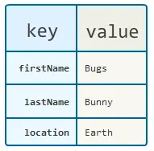localStorage is a simple key-value store, in which the keys and values are strings. There is only one store per domain. This functionality is exposed through the globally available localStorage object. The same applies to sessionStorage.
// using localStorage // store data localStorage.lastName = "Bunny"; localStorage.firstName = "Bugs"; localStorage.location = "Earth"; // retrieve data var lastName = localStorage.lastName; var firstName = localStorage.firstName; var location = localStorage.location;
This data is located in a store attached to the origin of the page. We created a JSBin example in which we included the above code.
Once opened in your browser, the JavaScript code is executed. With the browser dev. tools, we can check what has been stored in the localStorage for this domain:
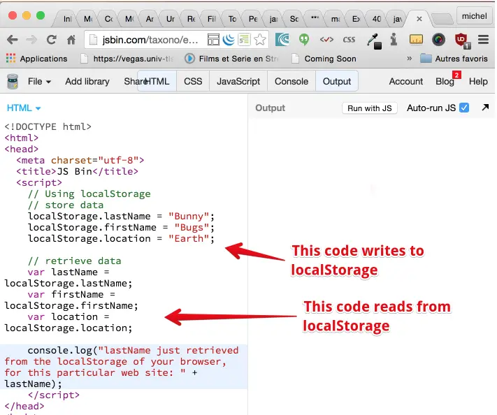Here is a view of the devtools. In more recent versions of Google Chrome, the “Resources” tab is named “Applications”:
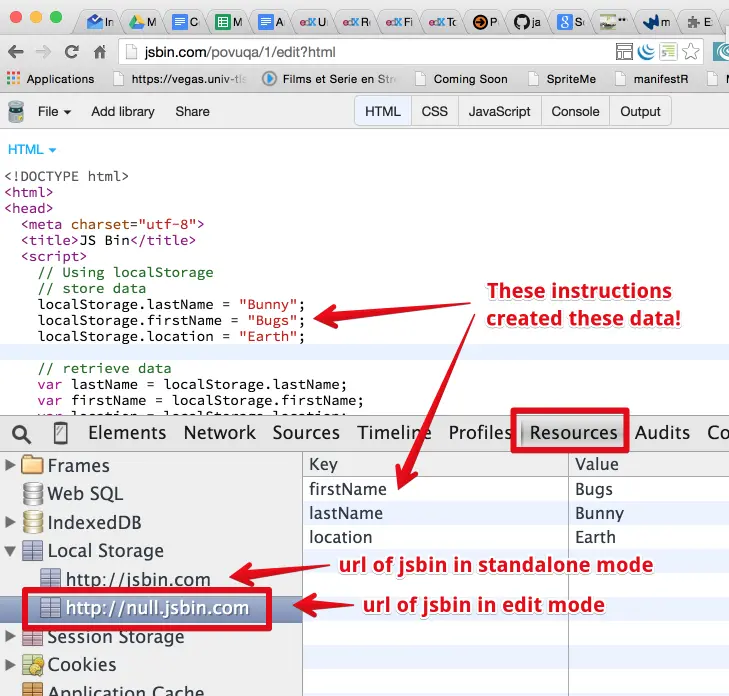Cookies are also a popular way to store key-value pairs. Web Storage, however, is a more powerful technique than cookies. The main difference is in size limits: cookies are limited to a few KBytes whereas Web Storage may extend to several MBytes. Also cookies generate additional HTTP request traffic (whether to request a Web page, an image, a stylesheet, a JavaScript file, etc.).
Objects managed by Web Storage are no longer carried on the network and HTTP, and are easily accessible (read, change and delete) from JavaScript, using the Web Storage API.
You can start filling this form and come back another day and complete it. It doesn’t matter if you closed your browser before coming back. The form never loses what you entered, even if you reload the page, or press “backspace” by mistake. This form auto saves/restores its content.
In this example, we use the most simple way to use localStorage:
Open this
online example at JSBin, and use F12 or cmd-alt-i (Mac OS) to look at the dev. tools. As you type in the
different input fields, their content is updated in the localStorage.
We just added input event listeners to each input field. For example, in order to save the first name input
field’s content, we just added:
oninput="localStorage.<font color="red">firstName</font>=this.value;"
Where firstName in red is the key and this.value the current value of the input field.

In the same way, we added an input listener to all the input fields in this example’s form.
This time, we want the form content to be restored on page load/reload. We will add a restoreFormContent() function in the JavaScript code that will be called each time the page is loaded. In this function, we will read the saved data and set the input fields’ values.
Complete example on JSBin: enter data and press reload at any time. The form content is restored!
// Called when the page is loaded
window.onload = restoreFormContent;
function restoreFormContent() {
console.log("restoring form content from localStorage");
if(localStorage.firstName !== undefined)
document.getElementById("firstName").value = localStorage.firstName;
if(localStorage.lastName !== undefined)
document.getElementById("lastName").value = localStorage.lastName;
if(localStorage.email !== undefined)
document.getElementById("email").value = localStorage.email;
if(localStorage.age !== undefined)
document.getElementById("age").value = localStorage.age;
if(localStorage.date !== undefined)
document.getElementById("date").value = localStorage.date;
}
The tests at lines 7, 10, 13, etc., verify that data has been saved, before trying to restore it. Without these tests, it would put the “undefined” string as the value of input fields with no corresponding data to restore.
This time we will look at another example that uses new methods from the API:
If you want to keep a simple counter of the number of times a given user has loaded your application, you can use the following code (just to show how to use setItem/removeItem methods):
var counter = localStorage.getItem("count") || 0;
counter++;
localStorage.setItem("count", counter);
As you can easily guess from the above, we use var value = getItem(key) to retrieve a key’s value and setItem(key, value) to set it. This is similar to what we saw in the examples of the page above, except that this time:
var inputField = document.getElementById("firstName");
saveInputFieldValue(inputField);
...
function saveInputFieldValue(field) {
localStorage.setItem(field.id, field.value);
}
Deleting a key can be performed through removeItem(). And if you wish to reset the entire store, simply call localStorage.clear().
Note that it will probably only be the rare occasion that you will want the entire store to be cleared by the user in production software (since that effectively deletes their entire data). However, it is a rather a common operation needed during development, since bugs may store faulty data the persistence of which can break your application, since the way you store data may evolve over time, or simply because you also need to test the experience of the user when first using the application.
One way of handling this is to add a user interface button that calls clear() when clicked, but you must then remember to remove it when you ship! The recommended approach to use (whenever possible) is to simply open the dev. tool’s console and type localStorage.clear() there — it’s safer and works just as well.
Local stores (localStorage or sessionStorage) can also be iterated through in order to list all the content that they contain. The order is not guaranteed, but this may be useful at times (if only for debugging purposes!). The following code lists everything in the current store:
for (var i = 0, n = localStorage.length; i < n; i++) {
var k = localStorage.key(i);
console.log(k + ": " + localStorage[k]); // get the ith value, the one with a key that is in the variable k.
}
Students may note that something seems a bit off in the example above: instead of calling localStorage.getItem(k), we simply access localStorage[k]. Why? Because keys in the local store can also be accessed as if the store were a simple JavaScript object.
Instead of localStorage.getItem(“foo”) and localStorage.setItem(“foo”, “bar”), one can write localStorage.foo and localStorage.foo = “bar”. Of course there are limitations to this mapping: any string can serve as a key, so that localStorage.getItem(“one two three”) works, whereas that string would not be a valid identifier after the dot (but it could still work as localStorage[“one two three”]).
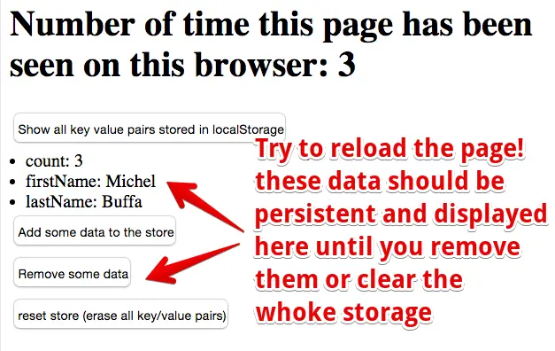Online example at JSBin, run it, then click on the first button to show all key/values in the localStorage. Open the URL in another tab, and see that the data is shared between tabs, as local stores are attached to an origin.
Then click on the second button to add data to the store, click on the third to remove data. Finally, the last one clears the whole data store.
<!DOCTYPE html>
<html lang="en">
<head>
<meta charset=utf-8 />
<title>Example of localStorare API use</title>
<script>
// Using localStorage
var counter = localStorage.getItem("count") || 0;
counter++;
localStorage.setItem("count", counter);
function getCountValue() {
// retrieve data
document.querySelector("#counter").innerHTML = localStorage.count;
}
function seeAllKeyValuePairsStored() {
// clear list first
document.querySelector('#list').innerHTML="";
for (var i = 0, n = localStorage.length; i < n; i++) {
var key = localStorage.key(i);
var value = localStorage[key];
console.log(key + ": " + value);
var li = document.createElement('li');
li.innerHTML = key + ": " + value;
document.querySelector('#list').insertBefore(li, null);
}
}
function resetStore() {
// erase all key values from store
localStorage.clear();
// reset displayed list too
document.querySelector('#list').innerHTML="";
}
function addSomeData() {
// store data
localStorage.lastName = "Buffa";
localStorage.firstName = "Michel";
// refresh display
seeAllKeyValuePairsStored();
}
function removeSomeData() {
// store data
localStorage.removeItem("lastName");
localStorage.removeItem("firstName");
// refresh display
seeAllKeyValuePairsStored();
}
</script>
</head>
<body onload="getCountValue()">
<h1>Number of times this page has been seen on this browser: <span id="counter"></span></h1>
<button onclick="seeAllKeyValuePairsStored()">Show all key value pairs stored in localStorage</button><br/>
<output id="list"></output>
<button onclick="addSomeData()">Add some data to the store</button><br/>
<button onclick="removeSomeData()">Remove some data</button><br/>
<button onclick="resetStore()">reset store (erase all key/value pairs)</button>
</body>
</html>
You can check in the Chrome dev. tools user interface that the content of the localStorage changes as you click on the buttons.
Local stores are also useful for saving/restoring user preferences of Web Applications. For example, the JS Bin tool you have been using since the beginning of this course uses localStorage to store the list of tabs you open, and their width:
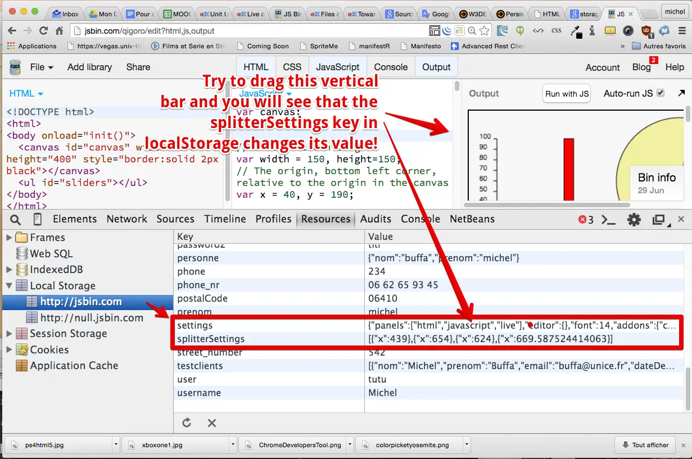This way, the next time you come back to JSBin, “it will remember your last settings”.
Another example is a guitar FX processor / amp simulator your instructor is writing with some of his students. It uses localStorage to save/restore presets values:
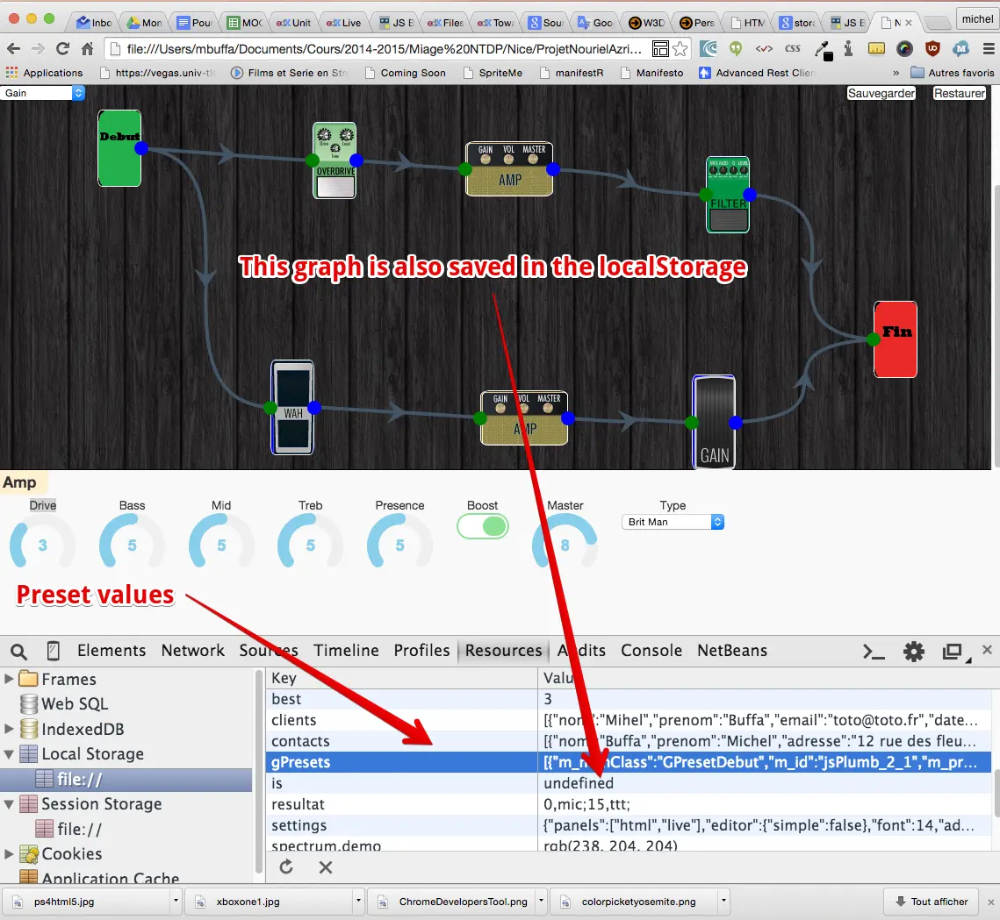Original example on JSBin:
We can change the color, size and speed of the animated rectangle. However, each time we come back to the page, default values are restored.
We would like to save the current values and find them back as they were when we come back to the page.
Here is a modified example that saves/restores its state, you can try it at JSBin. In this modified version of the animated rectangle example, you can set the color, size, speed, etc. And if you reload the page, the state of the different input field is restored, but also the internal variables. Check the source code in the JS Bin example and read the following explanations.
We used the same generic code for saving/restoring input fields’ values we saw in the first example that used localStorage. The only difference is that we renamed the two generic functions so that they correspond better to their role here (instead of saveFormContent we called the function restorePreferences).
The function initPreferences is executed when the page is loaded.
function initPreferences() {
console.log("Adding input listener to all input fields");
// add an input listener to all input fields
var listOfInputsInForm = document.querySelectorAll("input");
for(var i= 0; i < listOfInputsInForm.length; i++) {
addInputListener(listOfInputsInForm[i]);
}
// restore preferences
restorePreferences();
applyGUIvalues(); // Use the input fields' values we just restored to set internal
// size, incX, color, lineWidth variables
}
function addInputListener(inputField) {
// same as before
}
function restorePreferences() {
// same as old restoreFormContent
}
function applyGUIvalues() {
// Check restored input field content to set the size of the rectangle
var sizeWidget = document.getElementById("size");
size = Math.sign(incX)*parseInt(sizeWidget.value);
// also update the outline element's value
document.getElementById("sizeValue").innerHTML = size;
// Check restored input field content to set the color of the rectangle
var colorWidget = document.getElementById("color");
ctx.fillStyle = colorWidget.value;
// Check restored input field content to set the speed of the rectangle
var speedWidget = document.getElementById("speed");
incX = Math.sign(incX)*parseInt(speedWidget.value);
// also update the outline element's value
document.getElementById("speedValue").innerHTML = Math.abs(incX);
// Check restored input field content to set the lineWidth of the rectangle
var lineWidthWidget = document.getElementById("lineWidth");
ctx.lineWidth = parseInt(lineWidthWidget.value);
}
This time, using the setItem and getItem method we saw earlier in the course, we could write some generic functions for saving/restoring input fields’ content, without having advance knowledge about the number of fields in the form, their types, their ids, etc.
Furthermore, we removed all input listeners in the HTML, making it cleaner (no more oninput=“localStorage.firstName = this.value;’…)
Define listeners + restore old values after the page is loaded, use generic functions
We start writing an init() function that is called when the page is loaded. This function will:
// Called when the page is loaded
window.onload = init;
function init() {
console.log("Adding input listener to all input fields");
// add an input listener to all input fields
var listOfInputsInForm = document.querySelectorAll("input");
for(var i= 0; i < listOfInputsInForm.length; i++) {
addInputListener(listOfInputsInForm[i]);
}
// restore form content with previously saved values
restoreFormContent();
}
And here is the addInputListener(inputField) function. It takes an input field as parameter and attaches an oninput listener to it, that will save the field’s content each time a value is entered. The key will be the id of the input field (line 3):
function addInputListener(inputField) {
inputField.addEventListener('input', function(event) {
localStorage.setItem(inputField.id, inputField.value);
}, false);
}
Note that at line 2, we use addEventListener (that is not using the oninput property here). adddEventListener doesnot replace existing oninput definitions and keep all existing listeners unchanged.
We have seen how to save all input fields’ content on the fly. Now, let’s see how we can restore saved values and update the form. This is done using the function restoreFormContent():
function restoreFormContent() {
console.log("restoring form content from localStorage");
// get the list of all input elements in the form
var listOfInputsInForm = document.querySelectorAll("input");
// For each input element,
// - get its id (that is also the key for it's saved content
// in the localStorage)
// - get the value associated with the id/key in the local
// storage
// - If the value is not undefined, restore the value
// of the input field
for(var i= 0; i < listOfInputsInForm.length; i++) {
var fieldToRestore = listOfInputsInForm[i];
var id = fieldToRestore.id;
var savedValue = localStorage.getItem(id);
if(savedValue !== undefined) {
fieldToRestore.value = savedValue;
}
}
}
In this function, we first get the list of input fields (line 5), then iterate on it (line 14). For each input field, we get its id, which value is the key in localStorage for the previous data saved for this field (lines 15-16). Then if the value is not undefined, we restore it by setting the value of the input field (lines 19-20).
These generic functions can be used in many different projects
Indeed, if you look carefully, you will see that these functions are really useful. You may easily embed them in your own projects, or perhaps adapt them for a particular need (i.e. for saving input type=“checkboxes” that work a bit differently), etc.
Few things to remember, from the Web storage specification:
In many cases, local storage is all that your application will need for saving/loading data on demand. More complex ways to do it exist, such as IndexedDB, a No SQL database, that proposes transactions and usually comes with far more available space than local storage. IndexedDB usage is for advanced users and will be covered in the W3Cx HTML5 Apps and Games.
Additionally, there will be a limit on the amount of data that you can store there. Browsers enforce quotas that will prevent you from cluttering your users’ drives excessively. These quotas can vary from platform to platform, but are usually reasonably generous for simple cases (around 5MB), so if you are careful not to store anything huge there, you should be fine.
Finally, keep in mind that this storage is not necessarily permanent. Browsers are inconsistent in how they allow for it to be wiped, but in several cases it gets deleted with cookies — which is logical when you think of how it can be used for tracking in a similar fashion.
For serious applications, you might want to synchronize existing data with the server on a regular basis, in order to avoid data loss (and in general, because users enjoy using the same service from multiple devices at once). This is a rather complex feat, and frameworks such as Firebase can help. Such techniques are beyond the scope of this course and will not be covered.
sessionStorage key/values instead of cookies?
Note that if all you need is to store session-based data in a manner that is more powerful than cookies, you can use the sessionStorage object which works in exactly the same way as localStorage, but the lifetime is limited to a single browser session (lifetime of your tab/window).
Also note that in addition to being more convenient and capable of storing more data than cookies, it has the advantage of being scoped to a given browser tab (or similar execution context).
Cookies’ security drawback: if a user has two tabs open to the same site, they will share the same cookies. Which is to say that if you are storing information about a given operation using cookies in one tab, that information will leak to the other side — this can be confusing if the user is performing different tasks in each.
By using sessionStorage, the data you store will be scoped and therefore not leak across tabs!
Storing strings is all well and good, but it quickly becomes limiting: you may want to store more complex data with at least a modicum of structure.
There are some simple approaches, such as creating your own minimal record format (e.g. a string with fields separated with a given character, using join() on store and split() upon retrieval) or using multiple keys (e.g. post_17_title, post_17_content, post_17_author, etc.). But these are really hacks. Thankfully, there’s a better way, JSON.stringify() and JSON.parse() methods.
JSON provides a great way of encoding and decoding data that is a really good match for JavaScript. You have to be careful not to use circular data structures or non-serializable objects, but in the vast majority of cases, plugging JSON support into your local store is straightforward.
locaStorage.key = JSON.stringify(object); // or... localStorage.setItem(key, JSON.stringify(object));
Let’s try a simple toy example (online at JSBin). The example below saves a JavaScript object in JSON, then restores it and checks that the object properties are still there!

<!DOCTYPE html>
<html lang="en">
<head>
<meta charset=utf-8 />
<title>Storing JSON Objects with Local Storage</title>
<script>
var personObject= {'givenName': 'Michel', 'familyName': 'Buffa'};
// Store the object as a JSON String
localStorage.setItem('testObject', JSON.stringify(personObject));
// Retrieve the object from storage
var retrievedObject = JSON.parse(localStorage.getItem('testObject'));
console.log(retrievedObject.firstName + " " + retrievedObject.lastName);
// then you can use retrievedObject.givenName, retrievedObject.familyName...
</script>
</head>
<body>
</body>
</html>
Online example on JSBin that saves in localStorage an array of contacts in JSON
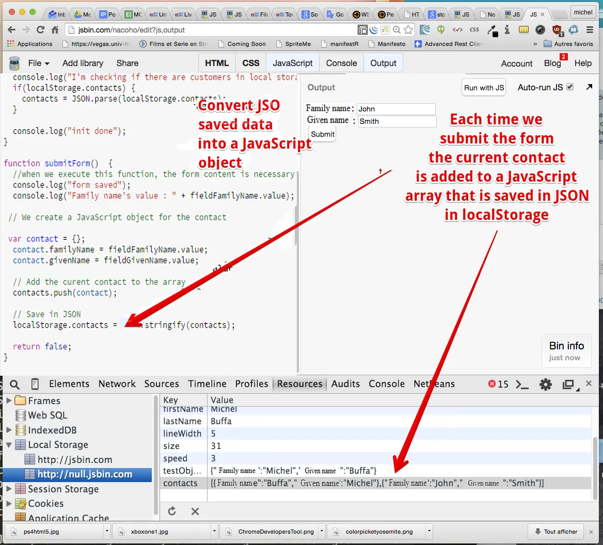Add contacts using the form, see how the HTML table is updated. Try to reload the page: data are persisted in localStorage.
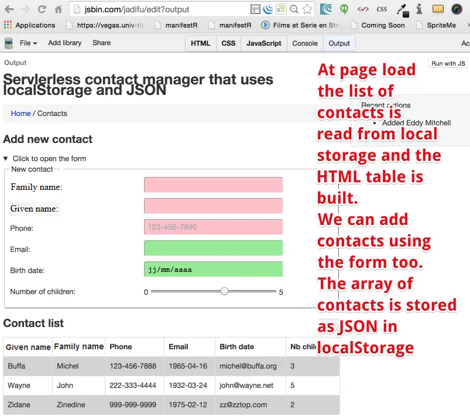Examine the localStorage:
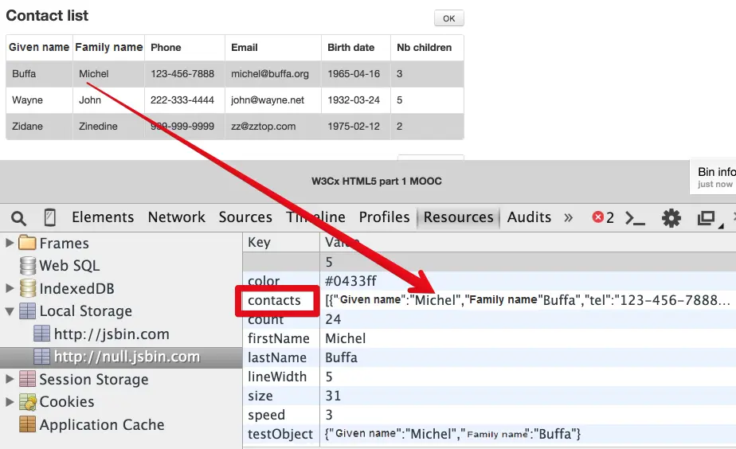The source code for this example is a bit long, and we suggest that you examine it in the JS Bin tool. We extensively commented it. It uses:
Well structured pages with the new elements seen during Module 1 (section, article, nav, aside, etc.)
HTML5 form elements with builtin and custom validation (the date cannot be in the past, the firstName and lastName fields do not accept &, #, ! or $ characters), localStorage for saving / restoring an array of contacts in JSON.
It shows how to use the DOM API for dynamically updating the page content (build the HTML table from the array of contacts, add a new line when a new contact is submitted, etc.)
The objective of this chapter is to provide an overview of the File API.
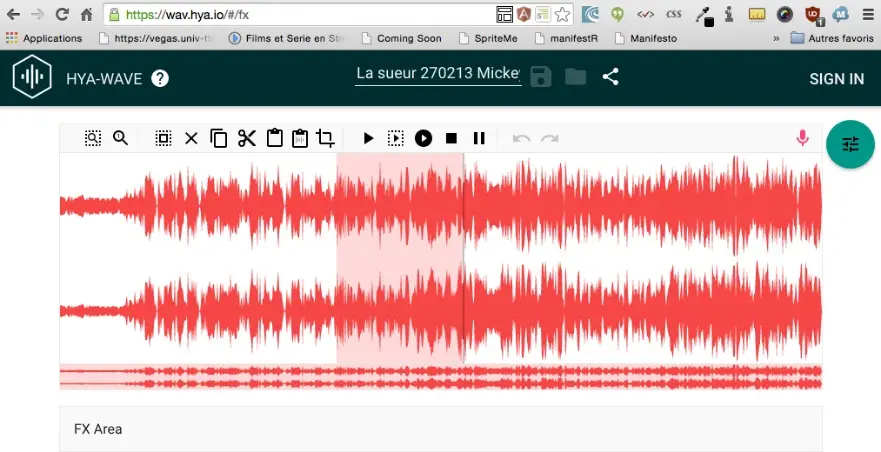Before HTML5, file management was limited to multipart forms and to Ajax for sending/requesting files to/from a remote Web server.
Possible actions were limited, both for the developer and the user. However, HTML5 now comes with an API called “File” that holds features for accessing file metadata (name, size, type) from client-side JavaScript. The API also has methods for reading file contents directly in the browser. This is particularly interesting for displaying preview of images before uploading them, or - and this is much more interesting - for developing Web applications that work with local files without the need for a server.
Imagine a multimedia player that accesses (in read-only) your file system, reads your audio and video files, etc., such as the Remo Music player below, or an application that edits the audio content of local mp3 files, for example, the HYA-WAVE sound editor (screenshot above).
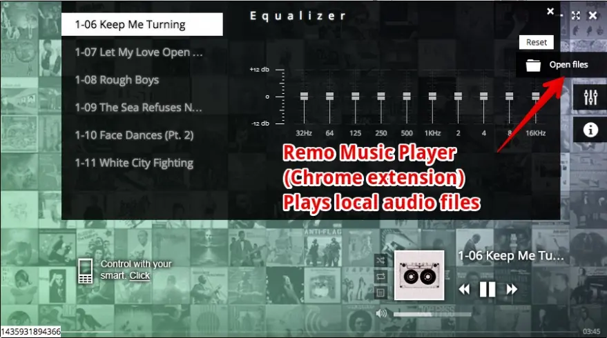 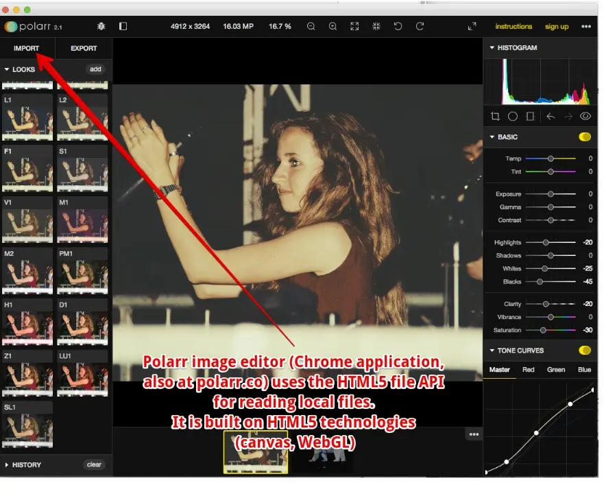Hi! Welcome for this second video of module 6, in which we will talk about the file Javascript API.
This is an API that has been designed for working with files on the client side in Javascript.
Before HTML5, there was no mean to know the the size, the name, the modification date of a file without sending it to a remote server. It was not possible also to read the content of a file, for example for previewing an image before uploading it into a remote server, or if you wanted to play a local audio file, or a video file without streaming and downloading it from a remote server. It was not possible.
I’m going first to show you some example of server less applications.
I mean applications written using HTML, CSS and Javascript that do not rely on data located on a remote server.
For example, I can show you this. This is a wave. This is an audio file editor that works with local files. I open the page, and from here I can drop a music file directly. Let’s go to get some music somewhere. Some AC/DC song! I can just drop the song and I can edit the song. I can play the song. I can cut, I can save locally, etc.
Another example is an application, a Chrome application that is also written using Web technologies but doesn’t run using HTTP.
It’s quite easy to write such applications, because there are regular Web applications using HTML, CSS and Javascript except that you’ve got to package them for putting them on the Chrome store.
I’m going first to show you a local audio file player that is called Remo.
I can just open files, choose one or several, open the files, I’ve got a playlist and I can play the songs. Normally it works… yes, OK.
Finally, I’m going to show you an image editor that has been written by one of the students from this course. This is an example of Instagram-like filters that have been written by @GeorgianaB from the discussion forum. It’s a regular Web application except that you can upload an image, a local image. Ok, no, this one is too small maybe. You can upload an image… it’s me with a strange head ;) Then you can apply Instagram filters or add borders. You can even download the result to your local disk.
We saw how to do this when we look at the download attributes in Module 1.
All these examples work with local files. Let’s go back to the course and now I’m going to show you how we can, for example, read images using an input type=file like this.
Select several files, open, and look at the preview directly in the page.
Here, I just read the files using the File API, I read them as what we call data URL and I created some img elements we added in the page.
First, before writing the application, I want to talk a little bit about data URLs.
Data URLs are strange set of characters like that ,and if you select them and paste them in the address bar you can see a small red icon. And you can use this everywhere where you would have use an http://URL.
If I use this image here, I can using it in JSBin for example, and if I add the image here I can see that the content of the image, the pixels, are encoded in the URL itself. How can you make such URLs? You’ve got plenty of Web sites, look for data URL with a search engine and you’ve got plenty of them.
The first one here is called DATAURL.net and it included ‘Data URL Maker’ so you can just open a file, any sort of file, here I take a JPG file and it will produce the data URL that corresponds. But you can also use with mp3 file, or mp4 file video or any sort of file encoding.
This was to introduce this new sort of URL that maybe you’ve never heard about before. Now, how can we write this?
I’m going to explain with the source code here because it’s simpler.
After that I will code it live. What we do is that we use an input type=file for reading the files. We define an event listener that will call this function ‘read files and display preview’ once the user has chosen some files.
In this callback, we iterate, we’ve got a ‘for’ loop, about the files. For each file, we build a file reader, that is a special object, that has a function called ‘readAsDataURL’, that will take a file descriptor as a parameter here.
When the file is read, because that can take some time if the file is big, then each file is read, the onload callback is executed. It’s exactly the same principle we saw with images as reading an image can take some time. You can only work with that image in an onload callback. So, when we enter this function that means that one file has been read and we can get the content of the file through the event using the ‘e.target.result’ property. Each time I read a file I can get its content here and it’s a data URL that contains all the pixels.
What we do in that example, is that we create a <span>. In the span with the innerHTML, we add an image that has for src attribute the content of the image we read as a data URL.
And finally, we just insert this image in the document and this is when we see it.
I’m going to live code this one, maybe a simpler version so that you can see the different steps in real time. First, I add an ‘input type=file multiple’ for selecting multiple files. This is what’s happening and here I can select several images. I’m going to add an ‘onchange’ listener:
'onchange=readImagesAndPreview()'.
And I’m going to pass the set of file descriptors that have been selected; ‘this.files’ is the correct way to send the selected files to a Javascript function.
Now, I’m going to start writing some script. But before, I will add a space, let’s say ‘div id=thumbnails’.
This is an empty container that will be used for inserting the preview of the images.
Now I’m going in the script part. In the script part, we’re going to write this function ‘readImagesAndPreview()’ and it takes as parameter the files that will be sent.
And here if I want just to read the first file I will just show you how it works. I create a reader object, like that, and I ask the reader to ‘readAsDataURL’ the first file.
What is happening is that this may take some time and I need to declare, before reading the files, a callback that will be code only once the file would have been read - ‘reader.onload’
And here, what can I do with the file that has been read, I will create an image element.
So i created an image element, I set the source of this element with the file content that is in the ‘e.target.value’. So I created an image. Then, I will add the image to the container here. I’m going to declare the container here. How can I add an element: ‘container.appendChild’ and I add the image I created.
Let’s try it, maybe I made some mistakes. I select several files, I open them and here, apparently, I make a small mistake.
Let’s open an image and now read the image and I can see the preview.
If you look carefully, it’s just a few lines of code.
So now I’m going to show you how we could work with not only one single image, but several images. The trick consists in adding a ‘for’ loop.
We will iterate on the length of the file’s variable here. If we got 3 files, we do 3 loops. I’m going to define a variable called ‘f’ that will correspond to the current file.
What we are going to read this time is the current file ‘f’.
So this loop here, will first read files, for each one we do read as data URL, when the file is read we enter the onload callback, we create an image with the result.
I’m going just to add some constraints on the size, because when I tried earlier I had big images that could not fit on the screen.
I constraint the width to 100px and the height will just follow.
Like this, let’s try. If I select several pictures, two of them,
I can see the two pictures. If I select more, then I can see the whole set of pictures that are coming as previews.
You can see that the number of lines of code is really small and this is quiet powerful.
If you want to write, for example, a Web site that will upload pictures, you can preview them, select them and then upload them.
I show you earlier the application by one of the students that can do Instagram like filters, but you can also find some new on the Chrome store.
I installed one that is called Polarr that is using HTML for all the functionalities. So you can just import a picture, let’s say this one. Then you can select filters, you can do some corrections on it and so on, and finally you can export it and that’s all.
All this here is HTML5, this is canvas, these are form elements we saw the last week, some canvas here, or image elements and so on.
<!DOCTYPE html>
<html lang="en">
<head>
<meta charset="utf-8">
<title>Example of using readAsDataURL</title>
</head>
<body>
<input type="file" multiple onchange="readImagesAndPreview(this.files);">
<p>
<div id="thumbnails"></div>
<script>
var container = document.getElementById("thumbnails");
function readImagesAndPreview(files) {
for(var i=0; i < files.length; i++) {
var f = files[i];
var reader = new FileReader();
reader.onload = function(e) {
var img = document.createElement("img");
img.src = e.target.result;
img.width = 100;
container.appendChild(img);
}
reader.readAsDataURL(f);
}
}
</script>
</body>
</html>
Imagine you have an input field like this:
This renders as a “select files” or “browse files” button. If you select one file in the file chooser dialog that has popped up, before HTML5 you couldn’t do anything with it in the client-side: no access from JavaScript. With the File API, you can read what we call “file metadata”: name, size, type and last modification date.
Look at the code below: the file API defines a files property on the DOM node corresponding to the <input type=“file”…/> input field. This property is an array.
In the example below, we get in the selectedFile variable, the metadata related to the first selected file:
var selectedFile = document.getElementById('input').files[0];
// do something with selectedFile.name, selectedFile.size, selectedFile.type
// selectedFile.lastModifiedDate
...
Here is a complete example on JSBin that uses the code above to get details about the first selected file. Please try it below on your browser (click on the button and choose one file):
<!DOCTYPE html>
<html lang="en">
<head>
<meta charset=utf-8 />
<title>Reading file metadata</title>
<script>
function displayFirstSelectedFileMetadata() {
var selectedFile = document.getElementById('input').files[0];
document.querySelector("#singleName").innerHTML = selectedFile.name;
document.querySelector("#singleSize").innerHTML = selectedFile.size + " bytes";
document.querySelector("#singleType").innerHTML = selectedFile.type;
document.querySelector("#singleDate").innerHTML = selectedFile.lastModifiedDate;
}
</script>
</head>
<body>
Select one or more files: <input type="file" id="input"
onchange="displayFirstSelectedFileMetadata();"/>
<p>
<ul>
<li>File name: <span id="singleName"></span></li>
<li>File size: <span id="singleSize"></span></li>
<li>File type: <span id="singleType"></span></li>
<li>File last modification date: <span id="singleDate"></span></li>
</ul>
</body>
</html>
This example is a bit more complicated, as it will display details about all files selected (not only the first) and allows only images to be selected, using the accept attribute of the input field: <input type=“file” accept=“image/*“…/>.
Example on JSBin, or try it in your browser: click on the button, and select multiple image files. Notice that in the file selector, files that are not images will be greyed and non selectable.
<p>Select several images: <input
type=“file” accept=“image/*“ multiple onchange=”filesProcess(this.files)“
name=”selection”/></p>
<div id="result">...</div>
<script>
function filesProcess(files) {
var selection = "<table><tr><th>Name<
/th><th>Bytes</th><th>MIME Type</th>
<th>Last modified date</th></tr>";
for(i=0; i<files.length ;i++){
file = files[i];
selection += "<tr><td>"+file.name+"</td><td
style="text-align:right">"
+file.size+"</td><td>"
+file.type+"</td><td>
"+file.lastModifiedDate+"</td></tr>";
}
selection += "</table>";
document.getElementById("result").innerHTML = selection;
}
</script>
The HTML5 File API specification introduces several interfaces:
We will not use all of these interfaces, but let’s explain the difference between Blob and File, as most of the methods exposed by the FileReader interface take indiscriminately a Blob or a File as parameter.
An object of type Blob is a structure that represents binary data available as read-only. Most of the time, you will only encounter these objects when you handle files.
Blob objects have two properties, namely:size and type, which respectively retrieve the size in bytes of the data handled by the Blob and their MIME type.
File objects are useful for manipulating… files! They inherit the properties and methods of Blob objects, and have two additional properties that are name, for the file name, and lastModifiedDate to get the date of the last modification of the file (in the form of a JavaScript Date object, obviously) .
Most of the time, we will work with File objects. Blob objects will have real interest when you download binary files using Ajax (see example below).
If you are interested in seeing how Blob objects can be used, here is an example “as is” that shows how to download an image using Xhr2 (Xml Http Request version 2). The examples uses a <progress> element to show the download progress, and uses xhr.responseType = ‘blob’; to indicate that the file we are going to download is a binary file (a blob). Try the example, then comment the line with responseType=‘blob’. In this case, you will notice that the image file is not properly decoded by the browser and is not displayed in the page. We explain Xhr2 in the W3C HTML5 Apps and Games course.
In order to read the content of a file, different steps required. Let’s see how to do it.
The file API proposes several methods for reading file content, each taken from the FileReader interface. Here is how you create a FileReader object:
There are three different methods available for reading a file’s content: readAsText, readAsArrayBuffer for binary data and also as readAsDataURL (the content will be a URL you will use to set the src field of an <img src=...>, <audio>, <video>, and also with all existing methods/properties that accept a URL).
All these methods take as a unique parameter a File object (for example, a file chosen by a user after clicking on a <input type=file> input field). Below, we use, as an example, the readAsText method:
function readFileContent(f) {
// Executed last: called only when the file content is loaded, e.target.result is
// The content
reader.onload = function(e) {
var content = e.target.result;
// do something with the file content
console.log("File " + f.name + " content is: " + content);
};
// Executed first: start reading the file asynchronously, will call the
// reader.onload callback only when the file is read entirely
reader.readAsText(f);
}
The above code shows how a file can be read as text. The function is called, for example by clicking on the button corresponding to a <input type=“file” id=“file” onchange=“readFileContent(this.files)”/>, and by choosing a file.
Try a variation of the above code in your browser, that displays the file content in a text area. This example is detailed further in the course. Click and select a text file below:
Choose a text file:
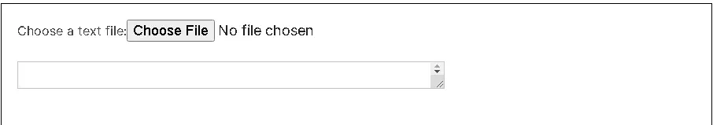In the following pages, we look at different examples that read file contents as text, dataURL and binary.
Let’s start by reading a pure text file
Example at JSBin, or try it below in your browser:
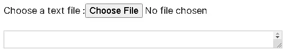<!DOCTYPE html>
<html lang="en">
<head>
<meta charset="utf-8">
<title>Example of use of FileReader with a text file</title>
</head>
<body>
<label for="files">Choose a text file:</label><input type="file" id="file"
onchange="readFileContent(this.files)"/><br/>
<p>
<textarea rows=15 cols=50 id="fileContent"></textarea>
<script>
function readFileContent(files) {
console.log("In readFileContent");
var reader = new FileReader();
// Executed last: called when the file content is loaded, e.target.result is
// The content
reader.onload = function(e) {
// display content in the textarea with id="fileContent"
document.getElementById("fileContent").value= e.target.result;
};
console.log("Reading file:" + files[0].name);
// Executed first: start reading the file asynchronously , will call the onload
// callback when the file is read
reader.readAsText(files[0]);
}
</script>
</body>
</html>
This example is the one at the end of the previous page. This time, we show the complete source code above. Remember that the instruction at line 29 is executed first, then when the file is read, the browser will call asynchronously the onload callback at line 20.
Example on JSBin, or try it below in your browser. This time, please select multiple text files (using shift for multiple selection):
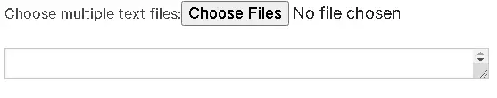<!DOCTYPE html>
<html lang="en">
<head>
<meta charset="utf-8">
<title>Example of use of FileReader with a text file</title>
</head>
<body>
<label for="files">Choose multiple text files:</label>
<input type="file" id="files"
multiple onchange="readFilesAndDisplayAsText(this.files);"/><br/>
<p>
<textarea rows=30 cols=50 id="filesContent"></textarea>
<script>
var filesContent = document.getElementById("filesContent");
function readFilesAndDisplayAsText(files) {
console.log("dans read files");
// Loop through the FileList
for (var i = 0, f; f = files[i]; i++) {
var reader = new FileReader();
// Add an onload listener to the reader
addOnLoadListener(reader, f.name);
// start reading, will call the listener later, when the file f is read
reader.readAsText(f);
}
}
function addOnLoadListener(reader, name) {
// Add an onload listener that will be able to print the name of the
// file...
reader.onload = function(e) {
filesContent.value += "###### READING FILE " + name + " ######";
filesContent.value += e.target.result;
};
}
</script>
</body>
</html>
This example is similar to the previous one, except that this time we read multiple files.
Line 20: this is the for loop that will iterate on the files object passed as parameter by the onchange listener declaration at line 10.
Line 25: instead of declaring the onload listener with a reader.onload =… directly in the loop, this time we preferred to write a separate function that will do this. This technique is useful when you want the listener to work with extra variables computed in the loop (in our case, the name of the file).
Note that you can optionally indicate the encoding of the file you are going to read (default is UTF-8):
reader.readAsText(file, 'UTF-8'); reader.readAsText(file, 'ISO-8859-1'); ...
This method is rarely used, except for loading “raw” binary data. For images you would like to see in your HTML page using the <img src= tag> or for drawing in a canvas, or for audio and video files that you would like to play using the <audio> or <video> elements, it would be preferable to use the readAsDataURL method presented on the next page of the course.
readAsArrayBuffer is often used for purposes such as reading audio samples that should be loaded in memory and played using the WebAudio API, or for loading textures that you will use with WebGL for 3D animations.
The WebAudio API is useful for reading audio sound samples from memory (no streaming), and has been designed for music application and games. This example shows how a local audio file can be read and played directly in the browser, without the need for a server!
Example on JSBin (does not work on IE, as it does not support the WebAudio API). We could not embed it here on the edX platform as it prevents code that uses Ajax to run in its pages.
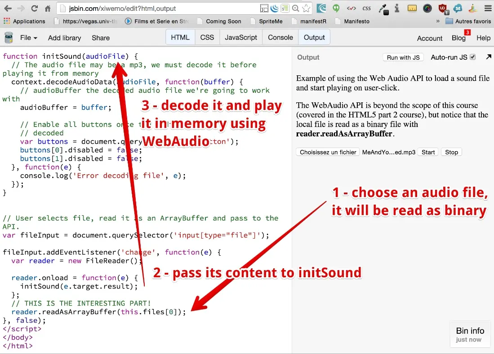// User selects file. Read it as an ArrayBuffer and pass to the API.
var fileInput = document.querySelector('input[type="file"]');
fileInput.addEventListener('change', function(e) {
var reader = new FileReader();
reader.onload = function(e) {
initSound(e.target.result);
};
// THIS IS THE INTERESTING PART!
reader.readAsArrayBuffer(this.files[0]);
}, false);
A data URL is a URL that includes type and content at the same time. It is useful, for example, for in-lining images or videos in the HTML of a Web page (on mobile devices, this may speed up the loading of the page by reducing the number of HTTP requests).
Here is an example of a red square, as a data URL. Copy and paste it in the address bar of your browser, and you should see the red square:
data:image/png;base64,iVBORw0KGgoAAAANSUhEUgAAAAUAAAAFCAYAAACNbyblAAAAHElEQVQI12P4//8/w38GIAXDIBKE0DHxgljNBAAO9TXL0Y4OHwAAAABJRU5ErkJggg==
If we set the src attribute of an image element <img src="data:image/png...."> with the data URL of the above screenshot, it will work exactly as if you used a URL that started with https://
In your browser, you will see a small red circle rendered by this source code:
<img src="data:image/png;base64,iVBORw0KGgoAAAANSUhEUgAAAAUA AAAFCAYAAACNbyblAAAAHElEQVQI12P4//8/w38GIAXDIBKE0DHxgljNBAAO 9TXL0Y4OHwAAAABJRU5ErkJggg==" alt="Red square" width=50 height=50/>
This dataURL format enables file content to be stored in a base64 format (as a string), and adds the MIME type specification of the content. The dataURL can therefore store a file as a URL readable with modern browsers. It is becoming more commonly used on the Web, especially for mobile applications, as inlining images reduces the number of HTTP requests and makes the Web page load faster.
You will find lots of Web sites and tools for generating dataURL from files, such as Image to Data URI converter (screenshot below):
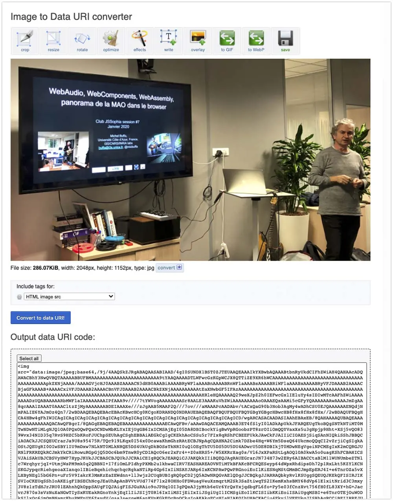With the above example, you can copy and paste the characters on the left and use them with an <img src="...">. Just set the src attribute with it!
Notice that you can encode any type of file as dataURL, but this format is most frequently used with ./images files (images, audio, video).
Example of HTML5 logo embedded in a document without any real image, just a dataURL and CSS:
This first example is useful for forms that allow the user to select one or more pictures. Before sending the form, you might want to get a preview of the pictures in the HTML page. The reader.readAsDataUrl method is used for that.
Example on JSBin or try it below in your browser:
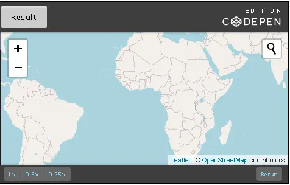<label for="files">Choose multiple files:</label>
<input type="file" id="files" multiple
onchange="readFilesAndDisplayPreview(this.files);"/><br/>
<p>Preview of selected images:</p>
<output id="list"></output>
<script>
function readFilesAndDisplayPreview(files) {
// Loop through the FileList and render image files as thumbnails.
for (var i = 0, f; f = files[i]; i++) {
// Only process image files.
if (!f.type.match('image.*')) {
continue;
}
var reader = new FileReader();
//capture the file information.
reader.onload = function(e) {
// Render thumbnail. e.target.result = the image content
// as a data URL
// create a span with CSS class="thumb", for nicer layout
var span = document.createElement('span');
// Add an img src=... in the span, with src= the dataURL of
// the image
span.innerHTML = "<img class='thumb' src='" +
e.target.result + "' alt='a picture'/>";
// Insert the span in the output id=list
document.getElementById('list').insertBefore(span, null);
};
// Read in the image file as a data URL.
reader.readAsDataURL(f);
}
}
Errata: the above screenshot says "choose multiple files", but the example only works with a single file.
function drawImage(imageFile) {
var reader = new FileReader();
//capture the file information.
reader.onload = function(e) {
// For drawing an image on a canvas we
// need an image object
var img = new Image();
// Even if the file has been read, decoding
// the dataURL format may take some time
// so we need to use the regular way of
// working with images: onload callback
// that will be called after setting the src attribute
img.onload = function(e) {
// draw the image!
ctx.drawImage(img, 0, 0, 400, 400);
}
// e.target.result is the dataURL, so we set the
// src if the image with it. This will call
// asynchonously the onload callback
img.src= e.target.result;
};
// Read in the image file as a data URL.
reader.readAsDataURL(imageFile);
}
function readFileAndDraw(files) {
drawImage(files[0]);
}
Remember how we worked with images on a canvas. We had to create an empty image object (line 8), set the src attribute of the image object (line 23), then use an image.onload callback (line 15), and we could only draw from inside the callback (line 17). This time, it’s exactly the same, except that the URL comes from e.target.result in the reader.onload callback (line 23).
Another very impressive example, has been developed by @GeorgianaB, a student of the first iteration of this course (see her other creations/examples). This Web application reads local image files, draws them into a canvas element and proposes different filters. This example is given “as is” for those of you who would like to go further. Just click on the link (or on the image below) and look at the source code.
Try this example online on gitHub.
This chapter presents the new Geolocation API and illustrates its use with several examples.
The Geolocation HTML5 JavaScript API is implemented by most modern Web browsers, and uses different means to get the current location: GPS, GSM/3G triangulation, Wifi, IP address, etc.
It is possible to prompt the user to activate the GPS (this is what
most GPS navigation software does on mobile phones), or ask for a
particular mean among those available. It is also possible to track the
current position when it changes. This is useful for writing a
navigation application or for tracking in real time the position of
different participants in the case of an application that involves
several persons at the same time (using WebSockets, for example).
Browser support for the Geolocation API is excellent, both on mobile and on desktop devices.
navigator.geolocation.getCurrentPosition(showPosition, onError);
function showPosition(position) {
console.log("latitude is: " + position.coords.latitude);
console.log("longitude is: " + position.coords.longitude);
}
function onError(err) {
console.log("Could not get the position");
}
This online example at JSBin shows how to get the current longitude and latitude and display them in an HTML page. Try it below in your browser:
Click the button to get your coordinates: Where am I ? Note that the first time you execute this example, for privacy reasons, the browser will ask if you agree to share your position with the application.
<!DOCTYPE html>
<html lang="en">
<head>
<meta charset="utf-8">
<title>Basic example of use of the geolocation API</title>
</head>
<body>
<p id="msg">Click the button to get your coordinates:</p>
<button onclick="getLocation()">Where am I ?</button>
<script>
var displayCoords=document.getElementById("msg");
function getLocation() {
if (navigator.geolocation) {
navigator.geolocation.getCurrentPosition(showPosition);
} else {
displayCoords.innerHTML="Geolocation API not supported by your browser.";
}
}
function showPosition(position) {
displayCoords.innerHTML="Latitude: " + position.coords.latitude +
"<br />Longitude: " + position.coords.longitude;
}
</script>
</body>
</html>
In the previous example, we used the coords property of the position passed as an input parameter to the callback function. This coords object has many properties:
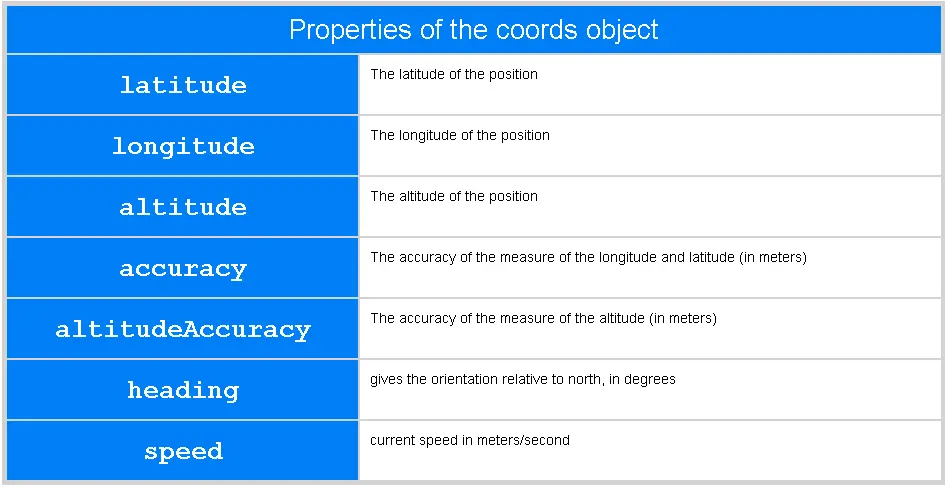Not all these values may be available in all Web browsers. When one of these properties is null, it means that it is not available (often the case of the altitudeAccuracy)
In the last example, we used the navigator.geolocation. getCurrentPosition(showPosition) with only one callback function (in the case of success), but it is also possible to pass a second parameter that is another callback function called in the case of error.
A slightly different version of the previous example shows how to properly check against the different possible errors. Try it, then turn your WiFi off or unplug your Ethernet cable (or turn off GPS and 3G/4G on a mobile phone). You should see an error message Error during geolocation: Location could not be obtained though the available means”:
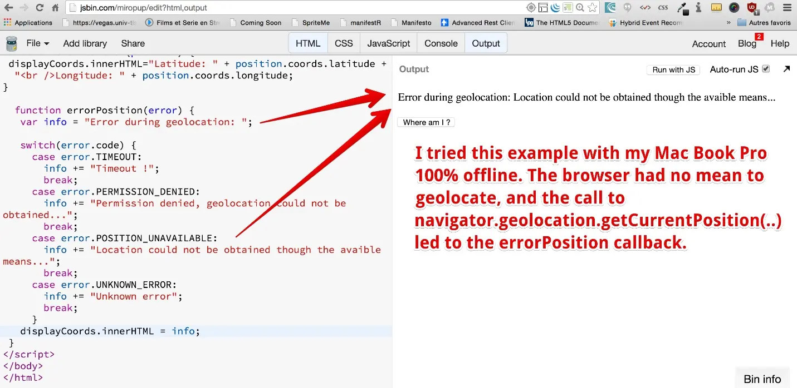<!DOCTYPE html>
<html lang="en">
<head>
<meta charset="utf-8">
<title>Basic example of use of the geolocation API</title>
</head>
<body>
<p id="msg">Click the button to get your coordinates:</p>
<button onclick="getLocation()">Where am I ?</button>
<script>
var displayCoords=document.getElementById("msg");
function getLocation() {
if (navigator.geolocation) {
navigator.geolocation.getCurrentPosition(showPosition, errorPosition);
} else {
displayCoords.innerHTML="Geolocation API not supported by your browser.";
}
}
function showPosition(position) {
displayCoords.innerHTML="Latitude: " + position.coords.latitude +
"<br />Longitude: " + position.coords.longitude;
}
function errorPosition(error) {
var info = "Error during geolocation: ";
switch(error.code) {
case error.TIMEOUT:
info += "Timeout !";
break;
case error.PERMISSION_DENIED:
info += "Permission denied, geolocation could not be obtained...";
break;
case error.POSITION_UNAVAILABLE:
info += "Location could not be obtained though the available means...";
break;
case error.UNKNOWN_ERROR:
info += "Unknown error";
break;
}
displayCoords.innerHTML = info;
}
</script>
</body>
</html>
In order to track the current position, the geolocation API provides a method similar to the getCurrentPosition(onSuccess, onError) named watchPosition(onSuccess, onError).
When getCurrentPosition gives a position when called, watchPosition does the following:
// get an id of the current tracking, the showPosition callback is like the one we saw in earlier examples. var watchPosId = navigator.geolocation.watchPosition(showPosition); ... // stop the tracking navigator.geolocation.clearWatch(watchPosId);
As a test, you may just try to change getCurrentPosition to watchPosition in the previous examples, and try this code using a mobile phone or tablet, walk for 20 meters and see the position changing.
Several options are available when using HTML5 geolocation. We can pass a third parameter to the getCurrentPosition and watchPosition methods, that will hold one or several of the following options:
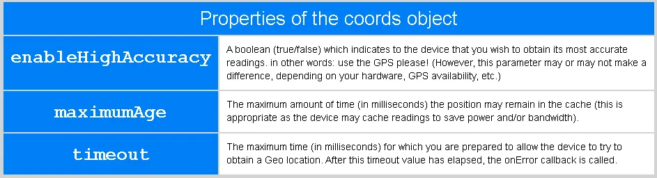// Just ask to turn GPS on, if available
navigator.geolocation.getCurrentPosition(onSuccess, onError,
{enableHighAccuracy:true});
// maximumAge = 10 mins, the position can be cached for 10 mins,
// useful when in tunnels...When the device tries to get
// a position, if it does not succeed, then go on error
// immediately
navigator.geolocation.getCurrentPosition(onSuccess, onError,
{maximumAge:600000, timeout:0});
// Position will never come from the cache (maximumAge: 0), and
// if after 0.1s the position could not be computed, then go on
// error
navigator.geolocation.getCurrentPosition(onSuccess, onError,
{maximumAge:0, timeout:100});
// Ask for GPS, cache for 30s, 27s before going on error...
watchId=navigator.geolocation.watchPosition(onSuccess, onError,
{enableHighAccuracy:true, maximumAge:30000, timeout:27000});
Look for the explanations in the lines of comment.
This section presents an example of how to get an interactive map, using the Leaflet API for OpenStreetMap, and gives links to more resources. Did you know that you can even get an estimation of a physical address from the longitude and latitude, using online Web services?
How to get a map centered on your longitude and latitude.
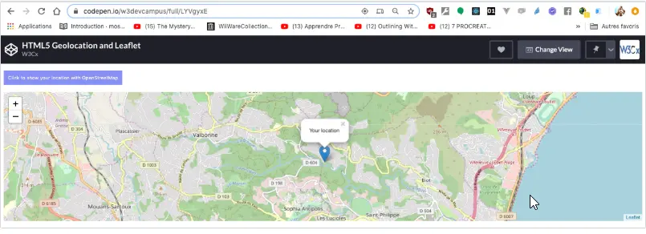This example is just given "as is", as there are so many possibilities for rendering a map with the Leaflet API for OpenStreetMapshttps:/. However, we think having such a basic example might be useful.
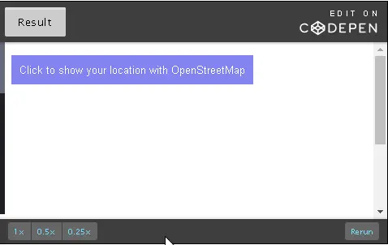function getLocation(e) {
e.preventDefault();
if (!navigator.geolocation) {
alert("Browser doesn't support geolocation");
} else {
navigator.geolocation.getCurrentPosition(success, error);
}
}
// Get current position successfully
function success(position) {
var map, marker,
latitude = position.coords.latitude,
longitude = position.coords.longitude;
// Instance map using leaflet
map = L.map('map').setView([latitude, longitude], 13);
// Tile layer using key api at cloudmade.com
L.tileLayer('https://{s}.tile.openstreetmap.org/{z}/{x}/{y}.png', {
key: '760506895e284217a7442ce2efe97797',
styleId: 103288,
maxZoom: 16
}).addTo(map);
// Marker using leaflet
marker = L.marker([latitude, longitude]).addTo(map);
// Popup in leaflet
marker.bindPopup('<p>Your location</p>').openPopup();
}
// Get current position fail
function error() {
alert('Get current position fail. Please access codepen to get geolocation.');
}
html, body {
height: 100%
}
.map {
height: 300px;
}
.btn {
background-color: rgba(10, 10, 230, .5);
border: 0;
color: #fff;
padding: 10px;
text-shadow: 0 0 1px rgba(0, 0, 0, .3);
text-decoration: none;
margin: 0.5rem 0 1rem;
display: inline-block;
}
<html> <head> <meta charset="utf-8"> <title>OpenStreetMap Example</title> <link rel="stylesheet" href="https://unpkg.com/leaflet@1.0.3/dist/leaflet.css"> <script src="https://unpkg.com/leaflet@1.0.3/dist/leaflet.js"></script> </head> <body> <button class="btn" onclick="getLocation(event)">Click to show your location with OpenStreetMap</button> <div id="map" class="map"></div> </body> </html>
<html> <head> <meta charset="utf-8"> <title>OpenStreetMap Example</title> <link rel="stylesheet" href="https://unpkg.com/leaflet@1.0.3/dist/leaflet.css"> <script src="https://unpkg.com/leaflet@1.0.3/dist/leaflet.js"></script> </head> <body> <button class="btn" onclick="getLocation(event)">Click to show your location with OpenStreetMap</button> <div id="map" class="map"></div> </body> </html>
function getLocation(e) {
e.preventDefault();
if (!navigator.geolocation) {
alert("Browser doesn't support geolocation");
} else {
navigator.geolocation.getCurrentPosition(success, error);
}
}
// Get current position successfully
function success(position) {
var map, marker,
latitude = position.coords.latitude,
longitude = position.coords.longitude;
// Instance map using leaflet
map = L.map('map').setView([latitude, longitude], 13);
// Tile layer using key api at cloudmade.com
L.tileLayer('https://{s}.tile.openstreetmap.org/{z}/{x}/{y}.png', {
key: '760506895e284217a7442ce2efe97797',
styleId: 103288,
maxZoom: 16
}).addTo(map);
// Marker using leaflet
marker = L.marker([latitude, longitude]).addTo(map);
// Popup in leaflet
marker.bindPopup('<p>Your location</p>').openPopup();
}
// Get current position fail
function error() {
alert('Get current position fail. Please access codepen to get geolocation.');
}
Different Web services can be used to get an address from longitude and latitude. Most are free of charge, but they will ask you to register an API key and enter your credit card number. If you send too many requests, you will be charged. Such a service is the Google Reverse Geocoding JavaScript API. For those of you who are really interested to know how this API works, please read the Google documentation and tutorials.
There is also an interesting Leaflet plugin (an extension to Leaflet) based on the Gisgraphy (free open source framework) service, that comes with a nice demo of reverse geocoding.
Let’s see some examples of use.
Example #1: how to get a physical address from the longitude and latitude.
Google reverse geocoding example (screenshot only):
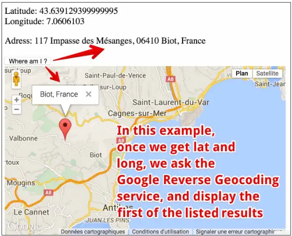Source code of this example (in order to run it, you need a Google API key, used at line 6.
<!DOCTYPE html>
<html lang="en">
<head>
<meta charset="utf-8">
<title>Js bin </title>
<script src="https://maps.googleapis.com/maps/api/js?key=
PUT_HERE_YOUR_API_KEY&v=3.exp&sensor=false">
</script><script>
// p elements for displaying lat / long and address
var displayCoords, myAddress;
// used with the google apis
var geocoder;
var map;
var infowindow = new google.maps.InfoWindow();
var marker;
// Called when the page is loaded
function init() {
displayCoords=document.getElementById("msg");
myAddress = document.getElementById("address");
geocoder = new google.maps.Geocoder();
// In order to show something even before a user clicks on the button
var latlng = new google.maps.LatLng(34.0144, -6.83);
var mapOptions = {
zoom: 8,
center: latlng,
mapTypeId: 'roadmap'
}
map = new google.maps.Map(document.getElementById('map_canvas'), mapOptions);
} // end of init()
// Called when the button is clicked
function getLocation() {
if (navigator.geolocation) {
navigator.geolocation.getCurrentPosition(showPosition);
} else {
displayCoords.innerHTML="Geolocation API not supported by your browser.";
}
}
// Called when a position is available
function showPosition(position) {
displayCoords.innerHTML="Latitude: " + position.coords.latitude +
"<br />Longitude: " + position.coords.longitude;
// Display the map
showOnGoogleMap(new google.maps.LatLng(position.coords.latitude,
position.coords.longitude));
}
function showOnGoogleMap(latlng) {
// Ask google geocoder for an address once we get a longitude and
// a latitude. In fact, the reverse geocoder sends back an array of "guesses"
// i.e. not just one address object, but several. Each entry in this array
// has several properties such as street, city, etc. We use the
"formatted_address"
// one here, but it might be interesting to get the detailed properties in other
// applications like a form with street, city, zip code etc.
geocoder.geocode({'latLng': latlng},reverseGeocoderSuccess);
function reverseGeocoderSuccess(results, status) {
if (status == google.maps.GeocoderStatus.OK) {
if (results[1]) {
map.setZoom(11);
marker = new google.maps.Marker({
position: latlng,
map: map
});
infowindow.setContent(results[1].formatted_address);
infowindow.open(map, marker);
// Display address as text in the page
myAddress.innerHTML="Adress: " + results[0].formatted_address;
} else {
alert('No surface address found');
}
} else {
alert('Geocoder failed due to: ' + status);
}
} // end of reverseGeocoderSuccess
} // end of showOnGoogleMap
</script>
</head>
<body onload="init()">
<title>HTML5 + Geolocalisation + Google Maps API Reverse Geocoding</title>
<p id="msg">Click the button to get your coordinates:</p>
<p id="address"></p>
<button onclick="getLocation()">Where am I ?</button>
<div id="map_canvas" style="width: 500px; height: 300px"></div>
</body>
</html>
Gisgraphy (free service) reverse geocoding example (screenshot only, click on it to see the demo on the Gisgraphy website):
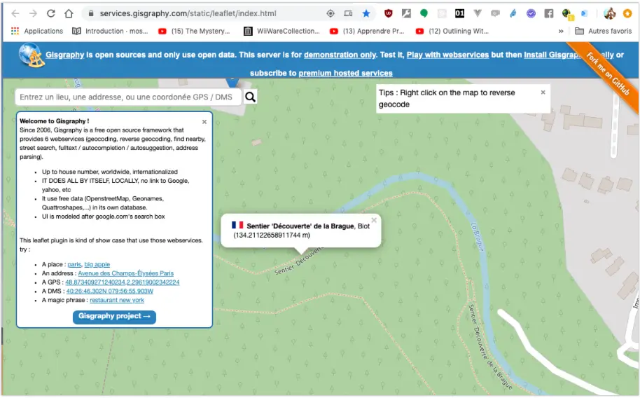Important note: these examples below rely on an external GitHub resource.
Please, pan and zoom on the map and click.
The longitude and latitude are computed from your click and a free reverse geocoding service is used to convert to a physical address.
<!DOCTYPE html>
<html>
<head>
<title>Leaflet Control Geocoder</title>
<meta charset="utf-8" />
<meta
name="viewport"
content="width=device-width, user-scalable=no initial-scale=1, maximum-scale=1"
/>
<link rel="stylesheet" href="https://unpkg.com/leaflet@latest/dist/leaflet.css
" />
<link rel="stylesheet" href="https://unpkg.com/leaflet-control-geocoder/dist/Control.Geocoder.css" />
<script src="https://unpkg.com/leaflet@latest/dist/leaflet-src.js"></script>
<script src="https://unpkg.com/leaflet-control-geocoder/dist/Control.Geocoder.js"></script>
<style type="text/css">
body {
margin: 0;
}
#map {
position: absolute;
width: 100%;
height: 100%;
}
</style>
</head>
<body>
<div id="map"></div>
<script type="text/javascript">
var map = L.map('map').setView([0, 0], 2);
var geocoder = L.Control.Geocoder.nominatim();
if (URLSearchParams && location.search) {
// parse /?geocoder=nominatim from URL
var params = new URLSearchParams(location.search);
var geocoderString = params.get('geocoder');
if (geocoderString && L.Control.Geocoder[geocoderString]) {
console.log('Using geocoder', geocoderString);
geocoder = L.Control.Geocoder[geocoderString]();
} else if (geocoderString) {
console.warn('Unsupported geocoder', geocoderString);
}
}
var control = L.Control.geocoder({
query: 'Moon',
placeholder: 'Search here...',
geocoder: geocoder
}).addTo(map);
var marker;
setTimeout(function() {
control.setQuery('Earth');
}, 12000);
L.tileLayer('https://{s}.tile.osm.org/{z}/{x}/{y}.png', {
attribution: '© <a href="https://osm.org/copyright">OpenStreetMap</a> contributors'
}).addTo(map);
map.on('click', function(e) {
console.log(e.latlng)
geocoder.reverse(e.latlng, map.options.crs.scale(map.getZoom()), function(results) {
var r = results[0];
if (r) {
if (marker) {
marker
.setLatLng(r.center)
.setPopupContent(r.html || r.name)
.openPopup();
} else {
marker = L.marker(r.center)
.bindPopup(r.name)
.addTo(map)
.openPopup();
}
}
});
});
</script>
</body>
</html>
<!DOCTYPE html>
<html>
<head>
<title>Leaflet Control Geocoder</title>
<meta charset="utf-8" />
<meta
name="viewport"
content="width=device-width, user-scalable=no initial-scale=1, maximum-scale=1"
/>
<link rel="stylesheet" href="https://unpkg.com/leaflet@latest/dist/leaflet.css" />
<link rel="stylesheet" href="https://unpkg.com/leaflet-control-geocoder/dist/Control.Geocoder.css" />
<script src="https://unpkg.com/leaflet@latest/dist/leaflet-src.js"></script>
<script src="https://unpkg.com/leaflet-control-geocoder/dist/Control.Geocoder.js"></script>
<style type="text/css">
body {
margin: 0;
}
#map {
position: absolute;
width: 100%;
height: 100%;
}
</style>
</head>
<body>
<div id="map"></div>
<script type="text/javascript">
var geocoder = L.Control.Geocoder.nominatim();
var map, marker, latitude, longitude;
function getLocation() {
if (!navigator.geolocation) {
alert("Browser doesn't support geolocation");
} else {
navigator.geolocation.getCurrentPosition(success, error);
}
}
// Get current position successfully
function success(position) {
latitude = position.coords.latitude;
longitude = position.coords.longitude;
// Instance map using leaflet
map = L.map('map').setView([latitude, longitude], 13);
// Tile layer using key api at cloudmade.com
L.tileLayer('https://{s}.tile.openstreetmap.org/{z}/{x}/{y}.png', {
key: '760506895e284217a7442ce2efe97797',
styleId: 103288,
maxZoom: 16
}).addTo(map);
// Marker using leaflet
marker = L.marker([latitude, longitude]).addTo(map);
// Popup in leaflet
marker.bindPopup('<p></p>').openPopup();
getPhysicalAddress({lat:latitude, lng:longitude});
}
// Get current position fail
function error() {
alert('Get current position fail. Please access codepen to get geolocation.');
}
var marker;
function getPhysicalAddress(latlong) {
geocoder.reverse(latlong, map.options.crs.scale(map.getZoom()), function(results) {
var r = results[0];
if (r) {
if (marker) {
marker
.setLatLng(r.center)
.setPopupContent(r.html || r.name)
.openPopup();
} else {
marker = L.marker(r.center)
.bindPopup(r.name)
.addTo(map)
.openPopup();
}
}
});
}
getLocation();
</script>
</body>
</html>
This is just a variation of the previous examples. We embedded the interactive map in a form, and we display the results of the reverse geocoder in a form field. This example might be useful if you want to pre-fill the address of a registration form, depending on the current location of the person who is registering.
Click on the Codepen logo (on the top right) so to run the online example (for security reasons the embedded version cannot run in this page):
<!DOCTYPE html>
<html>
<head>
<title>Gimmee My Location</title>
<meta charset="utf-8" />
<meta name="viewport"
content="width=device-width, user-scalable=no initial-scale=1, maximum-scale=1" />
<link rel="stylesheet" href="https://unpkg.com/leaflet@latest/dist/leaflet.css" />
<link rel="stylesheet" href="https://unpkg.com/leaflet-control-geocoder/dist/Control.Geocoder.css" />
<script src="https://unpkg.com/leaflet@latest/dist/leaflet-src.js"></script>
<script src="https://unpkg.com/leaflet-control-geocoder/dist/Control.Geocoder.js"></script>
</head>
<body onload="getLocation();">
<h1>Example of the use of reverse geocoder in a form</h1>
<form>
<fieldset>
<legend>Form example with map and address...</legend>
<div id="map" style="width: 500px; height: 300px"></div>
</fieldset>
<fieldset>
<legend>Surface address</legend>
<input id="surfaceAddress" size=110 type="text">
<fieldset>
<form>
<div id="map"></div>
<script type="text/javascript">
var geocoder = L.Control.Geocoder.nominatim();
var map, marker, latitude, longitude;
function getLocation() {
if (!navigator.geolocation) {
alert("Browser doesn't support geolocation");
} else {
navigator.geolocation.getCurrentPosition(success, error);
}
}
// Get current position successfully
function success(position) {
latitude = position.coords.latitude;
longitude = position.coords.longitude;
// Instance map using leaflet
map = L.map('map').setView([latitude, longitude], 13);
// Tile layer using key api at cloudmade.com
L.tileLayer('https://{s}.tile.openstreetmap.org/{z}{x}{y}.png', {
key: '760506895e284217a7442ce2efe97797',
styleId: 103288,
maxZoom: 16
}).addTo(map);
// Marker using leaflet
marker = L.marker([latitude, longitude]).addTo(map);
// Popup in leaflet
marker.bindPopup('<p></p>').openPopup();
getPhysicalAddress({lat:latitude, lng:longitude});
}
// Get current position fail
function error() {
alert('Get current position fail. Please access codepen to get geolocation.');
}
var marker;
function getPhysicalAddress(latlong) {
geocoder.reverse(latlong, 500000, function(results) {
var r = results[0];
console.log(r.name);
document.querySelector("#surfaceAddress").value = r.name;
if (r) {
if (marker) {
marker
.setLatLng(r.center)
.setPopupContent(r.html || r.name)
.openPopup();
} else {
marker = L.marker(r.center)
.bindPopup(r.name)
.addTo(map)
.openPopup();
}
}
});
}
</script>
</body>
</html>
Here are a few project ideas. Your classmates and the team who prepared the course will be glad to try them and offer feedback. Please post URLs in this discussion forum. These projects are optional, meaning that they won’t be graded. However, it is important to complete them to ensure good understanding of the material.